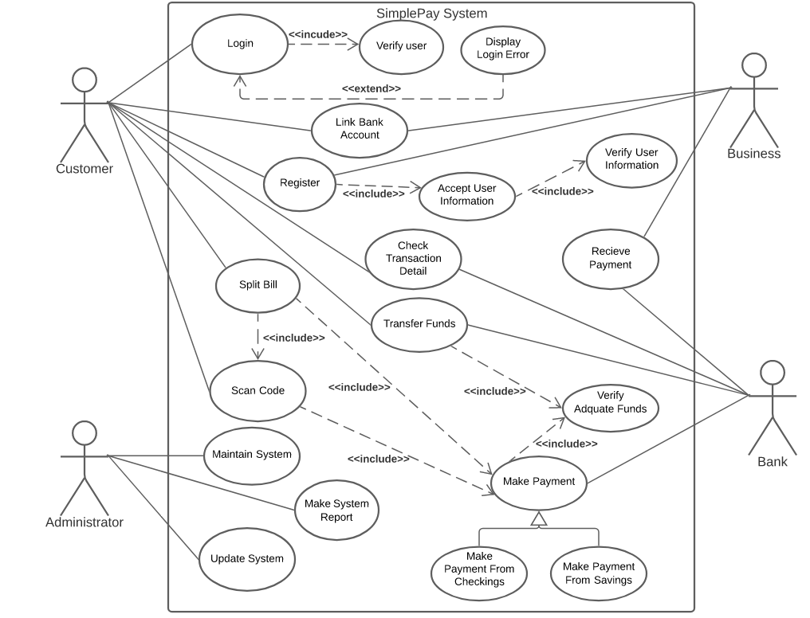
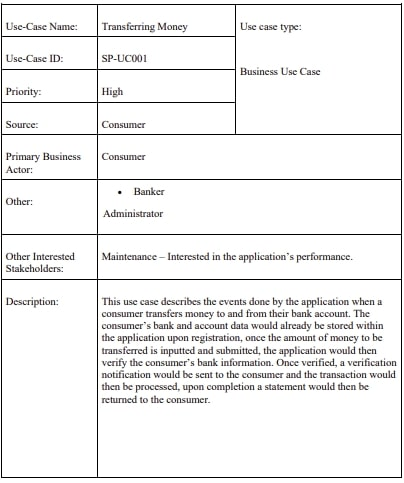
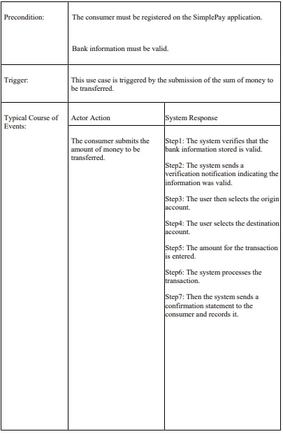
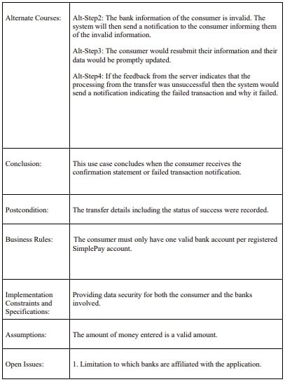

Use Cases
Quick Links
Simple Use Cases from User Stories
Actors:
● Business – Small and Medium Business Enterprises
● Customer – Consumers of the Business Enterprises
● Bank – Handler of Monetary Transactions of both Business and Customer
● Administrator – Responsible for the Upkeep and Maintenance of the Application
Use Cases:
● Register – allows both Customer and Business to sign-up for an account within the application.
● Login – allows Customers and Businesses with existing accounts to login into the application.
● Link Bank Account – allows the Customers and Businesses to sync their bank account information, from their respected Banks, with their application account.
● Transfer Funds – allows the Customers to transfer money to one another, via the use of the application accounts. The Customer’s money from their Bank account is transferred to the other Customer’s Bank account.
● Scan Code - gives the application the information of the Business and their account in which the Customer’s account can send their payment to.
● Make Payment – allows the Customer to make a payment transaction by scanning the Business’s QR Code. The Customer’s money from their Bank account is transferred to the Business’s Bank account.
● Receive Payment – allows the Business to receive the payment made by their Customers. The Business’s money is received from their Bank account.
● Spilt Bill – allows the Customers to split a bill amongst one another, in order to pay a Business.
● Check Transaction Detail – allows the Customers to view a report with details on all transactions between other Customers and Businesses.
● Maintain System – allows the Administrator to maintain the application’s system, to keep a smooth running for the Customers and Businesses using the application.
● Update System – allows the Administrator to keep updating the system with the amount of usage and user accounts made by Customers and Businesses on the application.
Use Case Diagram

Ranking of Use Case
| Use Case Name | Ranking Criteria, 1-5 | Total Score | Priority | Build Cycle | |||||
|---|---|---|---|---|---|---|---|---|---|
| 1 | 2 | 3 | 4 | 5 | 6 | ||||
| Register | 2 | 5 | 2 | 1 | 3 | 5 | 18 | Medium | 3 |
| Login | 4 | 4 | 3 | 2 | 3 | 2 | 18 | Medium | 3 |
| Link Bank Account | 3 | 5 | 4 | 2 | 2 | 4 | 20 | High | 2 |
| Transfer Funds | 4 | 4 | 5 | 4 | 5 | 3 | 25 | High | 1 |
| Scan Code | 5 | 4 | 3 | 3 | 4 | 2 | 21 | High | 2 |
| Make Payment | 5 | 3 | 5 | 4 | 3 | 3 | 23 | High | 1 |
| Receive Payment | 5 | 3 | 5 | 3 | 3 | 3 | 22 | High | 1 |
| Split Bill | 3 | 2 | 4 | 3 | 4 | 3 | 19 | Medium | 3 |
| Check Transaction Detail | 4 | 3 | 4 | 3 | 2 | 1 | 17 | Low | 5 |
| Maintain System | 5 | 3 | 2 | 3 | 4 | 2 | 19 | Medium | 4 |
| Update System | 4 | 3 | 4 | 3 | 3 | 2 | 19 | Medium | 4 |
To evaluate the priority of the use cases we rate them on 1-5 scale based on six criteria:
1. Significant impact on the architectural design.
2. Easy to implement but contains significant functionality.
3. Includes risky, time-critical, or complex functions.
4. Involves significant research or new or risky technology.
5. Includes primary business functions.
6. Will increase revenue or decrease costs.
Extended Use Case
Author(s): Ishika Gopie, Aalimah Ramai, Jediah Castle, Pryia Lackhan
Date: 14/03/21
Version: 1
  